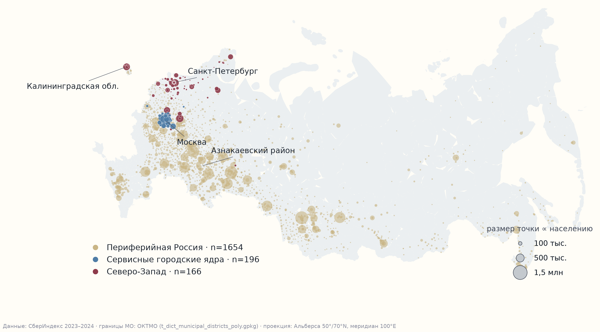

⏱️ За 60 секунд: сущность работы
Без ML-жаргона🗺️ Карта трёх укладов безналичной России

2 016 муниципалитетов России: размер круга пропорционален населению; цвета — 3 макро-экотипа (Периферия, Сервисные ядра, Северо-Запад).
📊 Три потребительских уклада безналичной России
passports_macro.parquet ↗Базовый уклад страны. Доля продуктов максимальна (закон Энгеля), сервисный сектор минимален. При этом вовлечённость в маркетплейсы не уступает мегаполисам (14.0% против 13.0% в ядрах) — электронная коммерция стала ключевым каналом товарного выравнивания периферии.
Столичные агломерации и региональные миллионники (протокол именования пройден дважды, lift 4.15). Развитая сервисная экономика: траты на рестораны и кафе почти в 3 раза выше периферии. Центры концентрации платежеспособного спроса.
Города Северо-Западного федерального округа и севера (СПб, Ленобласть, Карелия, Мурманск, Калининград; перевес 9.0× над случайным). Специфическая потребительская логистика, автономные цепочки поставок и повышенный средний чек.
📁 Документация и проверка для жюри
CRITERIA.md
4 детальные таблицы соответствия: задачи номинации, 6 критериев с весами, требования положения и учтённая критика прошлого сезона.
methodology.md
Полный научный отчёт: 8 этапов конвейера, формулы ICVI, предрегистрация, 15 протокольных отклонений и 7 честных ограничений.
labels.csv
Табличные метки всех 9 методов кластеризации и итогового Leiden-консенсуса для 2 016 муниципальных образований России.